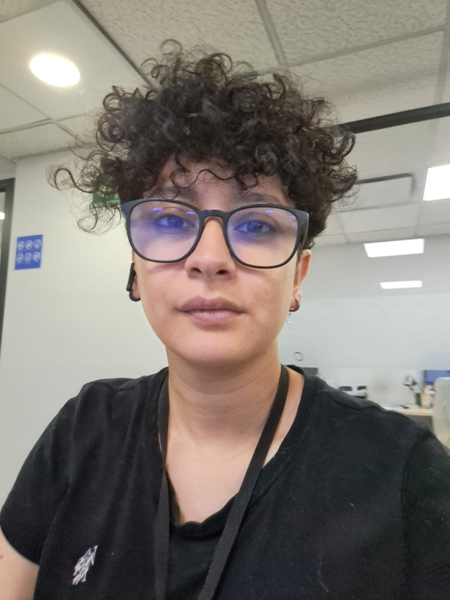

Hacer más con lo que tienes. Crear más con lo que sabes.
¡HOLA! SOY
Stefania Coronell
@StefanRepos

Desarrollo herramientas digitales que simplifican procesos, organizan la información y mejoran la experiencia del usuario.